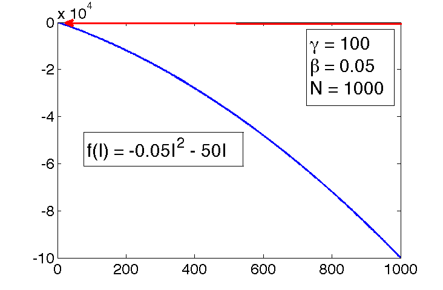
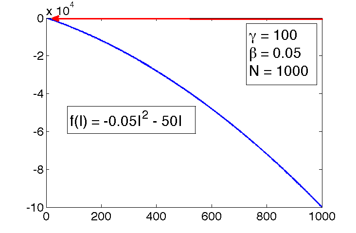

3. Models with one variable in continuous time¶
3.1. Introduction¶
In the previous chapter we have considered discrete time models, in which time is measured in integers. This worked well to describe processes that happen in periodic cycles, like cell division or heart pumping. Many biological systems do not work this way. Change can happen continuously, that is, at any point in time. For instance, the concentration of a biological molecule in the cell changes gradually, as does the voltage across the cell membrane in a neuron.
The models for continuously changing variables require their own set of mathematical tools. Differential equations use derivatives to describe how a variable changes with time. There is a tremendous amount of knowledge accumulated by mathematicians, physicists and engineers for analyzing and solving differential equations. There are many classes of differential equations for which it is possible to find analytic solutions, often in the form of “special functions.” Differential equations courses for physicists and engineers are typically focused on learning about the variety of existing tools for solving a few types of differential equations. For the purposes of biological modeling, knowing how to solve a limited number of differential equations is of limited usefulness. We will instead focus on learning how to analyze the behavior of differential equations in general, without having to solve them on paper.
I assume that you have seen basic differential equations before and thus will begin with a brief review of linear differential equations and their solutions. In contrast to linear differential equations, which can be solved in general, nonlinear differential equations may not be solvable even theoretically. When solutions cannot be found on paper, we have two options: 1) qualitative or graphical tools, such as finding equilibrium points and their stability, allow us to predict the long-term dynamics of the solution; 2) numerical solutions, which use computational methods to construct a sequence of numbers that approximate the true solution.
3.2. Building ODEs¶
We consider models with continuous time, for which it does not make sense to break time up into equal intervals. Instead of equations describing the increments in the dependent variable from one time step to the next, we will see equations with the instantaneous rate of the change (derivative) of the variable. For discrete time models, one formulation of the general difference equation was this:
\(g(x)\) is a function of the dependent variable, which may be as simple as 0 or \(ax\), or can be horribly nonlinear and complicated.
For difference equations, the time variable \(t\) is measured in the number of time steps (\(\Delta t\)), whether the time step is 20 minutes or 20 years. In continuous time models, we express \(t\) in actual units of time, instead of counting time steps. Thus, what we wrote as \(t+1\) for discrete time should be expressed as \(t+\Delta t\) for continuous time. The left-hand-side of the equation above describes the change in the variable \(x\) over one time step \(\Delta t\). We can write it as a Newton’s quotient, and then take the limit of the time step shrinking to 0:
To take the limit of the time step going to 0 means that we allow the increments in time to be infinitesimally small, and therefore the time variable may be any real number. The equation above thus becomes a differential equation, because it involves a derivative of the dependent variable.
In general, an ordinary differential equation is defined as follows:
Definition
An ordinary differential equation is an equation that contains derivatives of the dependent variable (e.g. \(x\)) with respect to an independent variable (e.g. \(t\)).
For example:
There are at least two good reasons to use differential equations for many applications. First, some events happen very frequently and non-periodically, so it is more reasonable to allow time to flow continuously instead of in steps. The second reason is mathematical: it turns out that dynamical systems with continuous time, described by differential equations, are better behaved than difference equations. This has to do with the essential “jumpiness” of difference equations. Even for simple nonlinear equations, the value of the variable after one time step can be far removed from its last value. This can lead to highly complicated solutions, as we saw in the logistic model in Chapter 1.
3.2.1. growth proportional to population size¶
We will now build up some of the most common differential equations models. First up, a simple population growth model with a constant growth rate. Suppose that in a population each individual reproduces with the average reproductive rate \(r\). This is reflected in the following differential equation:
This expression states that the rate of change of \(x\), which we take to be population size, is proportional to \(x\) with multiplicative constant \(r\). We will frequenlty use the notation \(\dot x\) for the time derivative of \(x\) for aesthetic reasons.
First, we apply dimensional analysis to this model. The units of the derivative are population per time, as can be deduced from the Newton’s quotient definition. Thus, the units in the equation have the following relationship:
This shows that as in the discrete time models, the dimension of the population growth rate \(r\) is inverse time, or frequency. The difference with the discrete time population models lies in the time scope of the rate. In the case of the difference equation, \(r\) is the rate of change per one time step of the model. In the differential equation, \(r\) is the instantaneous rate of population growth. It is less intuitive than the growth rate per single reproductive cycle, just like the slope of a curve is less intuitive than the slope of a line. The population growth happens continuously, so the growth rate of \(r\) individuals per year does not mean that if we start with one individual, there will be \(r\) after one year. In order to make quantitative predictions, we need to find the solution of the equation, which we will see in the next section.
3.2.2. chemical kinetics¶
Reactions between molecules in cells occur continuously, driven by molecular collisions and physical forces. In order to model this complex behavior, it is generally assumed that reactions occur with a particular speed, known as the kinetic rate. A simple reaction of conversion from one type of molecule (\(A\)) to another (\(B\)) can be written as follows:
In this equation the parameter \(k\) is the kinetic rate, describing the speed of conversion of \(A\) into \(B\), per concentration of \(A\).
Chemists and biochemists use differential equations to describe the change in molecular concentration during a reaction. These equations are known as the laws of mass action. For the reaction above, the concentration of molecule \(A\) decreases continuously proportionally to itself, and the concentration of molecule \(B\) increases continuously proportionally to the concentration of \(A\). This is expressed by the following two differential equations:
Several conclusions can be drawn by inspection of the equations. First, the dynamics depend only on the concentration of \(A\), so keeping track of the concentration of \(B\) is superfluous. The second observation reinforces the first: the sum of the concentrations of \(A\) and \(B\) is constant. This is mathematically demonstrated by adding the two equations together to obtain the following:
One of the basic properties of the derivative is that the sum of derivatives is the same as the derivative of the sum:
This means that the sum of the concentrations of \(A\) and \(B\) is a constant. This is a mathematical expression of the law of conservation in chemistry: molecules can change from one type to another, but they cannot appear or disappear in other ways. In this case, a single molecule of \(A\) becomes a single molecule of \(B\), so it follows that the sum of the two has to remain the same. If the reaction were instead two molecules of \(A\) converting to a molecule of \(B\), then the conserved quantity is \(2A + B\). The concept of conserved quantity is very useful for the analysis of differential equations. We will see in later chapters how it can help us find solutions, and explain the behavior of complex dynamical systems.
3.3. Analytic solutions of linear ODEs¶
3.3.1. concepts of ODEs¶
Let us define some terminology for ODEs:
Definition
The order of an ODE is the highest order of the derivative of the dependent variable \(x\).
For example, \(\dot x = rx\) is a first order ODE, while \(\ddot x = - mx\) is a second order ODE (double dot stands for second derivative). In this chapter we will restrict ourselves to first-order ODEs that can be generally written as follows:
Definition
A first-order ODE is one where the derivative \(dx/dt\) is equal to a defining function \(f(x,t)\), like this:
Note that the function may depend on both the dependent variable \(x\) and the independent variable \(t\). This leads to the next definition:
Definition
An ODE is autonomous if the defining function \(f\) depends only on the dependent variable \(x\) and not on \(t\).
For example, \(\dot x = 5x -4\) is an autonomous equation, while \(\dot x = 5t \) is not. An autonomous ODE is also said to have constant coefficients (e.g. 5 and -4 in the first equation above).
Definition
An ODE is homogeneous if every term in the defining function involves either the dependent variable \(x\) or its derivative.
For example, \(\dot x = x^2 + \sin(x)\) is homogeneous, while \(\dot x = -x + 5t\) is not. Most simple biological models that we will encounter in the next two chapters are autonomous, homogeneous ODEs. However, inhomogeneous equations are important in many applications, and we will encounter them at the end of the present section.
3.3.2. solutions via separate-and-integrate¶
In contrast with algebraic equations, we cannot simply isolate \(x\) on one side of the equal sign and find the solutions as one, or a few numbers. Instead, solving ordinary differential equations is very tricky, and no general strategy for solving an arbitrary ODE exists. Moreover, a solution for an ODE is not guaranteed to exist at all, or not for all values of \(t\). We will discuss some of the difficulties later, but let us start with equations that we can solve.
Definition
The analytic (or exact) solution of an ordinary differential equation is a function of the independent variable that satisfies the equation. If no initial value is given, then the general solution function will contain an uknown integration constant. If an initial value is specified, the integration constant can be found to obtain a specific solution.
This means that the solution function obeys the relationship between the derivative and the defining function that is specified by the ODE. To verify that a function is a solution of a given ODE, take its derivative and check whether it matches the other side of the equation.
Example. The function \(x(t) = 3t^2 +C\) is a general solution of the ODE \(\dot x = 6t\), which can be verified by taking the derivative: \(\dot x (t) = 6t\). Since this matches the right-hand side of the ODE, the solution is valid.
Example. The function \(x(t) = Ce^{5t}\) is a general solution of the ODE \(\dot x = 5x\). This can be verified by the taking the derivative: \(\dot x = 5C e^{5t}\) and comparing it with the right-hand side of the ODE: \(5x = 5 Ce^{5t}\). Since the two sides of the equation agree, the solution is valid.
In contrast with algebraic equations, we cannot simply isolate \(x\) on one side of the equal sign and find the solutions as one, or a few numbers. Instead, solving ordinary differential equations is very tricky, and no general strategy for solving an arbitrary ODE exists. Moreover, a solution for an ODE is not guaranteed to exist at all, or not for all values of \(t\). We will discuss some of the difficulties later, but let us start with equations that we can solve.
The most obvious strategy for solving an ODE is integration. Since a differential equation contains derivatives, integrating it can remove the derivative. In the case of the general first order equation, we can integrate both sides to obtain the following:
The constant of integration \(C\) appears as in the standard antiderivative definition. It can be specified by an initial condition for the solution \(x(t)\). Unless the function \(f(x,t)\) depends only on \(t\), it is not possible to evaluate the integral above. Instead, various tricks are used to find the analytic solution. The simplest method of analytical solution of a first-order ODEs, which I call separate-and-integrate consists of the following steps:
use algebra to place the dependent and independent variables on different sides of the equations, including the differentials (e.g. \(dx\) and \(dt\))
integrate both sides with respect to the different variables, don’t forget the integration constant
solve for the dependent variable (e.g. \(x\)) to find the general solution
plug in \(t=0\) and use the initial value \(x(0)\) to solve for the integration constant and find the specific solution
Example. Consider a very simple differential equation: \(\dot x = a\), where \(\dot x\) stands for the time derivative of the dependent variable \(x\), and \(a\) is a constant. It can be solved by integration:
This solution contains an undetermined integration constant; if an initial condition is specified, we can determine the complete solution. Generally speaking, if the initial condition is \(x(0) = x_0\), we need to solve an algebraic equation to determine \(C\): \(x_0 = a \times 0 - C\), which results in \(C = -x_0\). The complete solution is then \(x(t) = at + x_0\). To make the example more specific, if \(a = 5\) and the initial condition is \(x(0) = -3\), the solution is \(x(t) = 5t -3\).
Example. Let us solve the linear population growth model in equation (3.1): \(\dot x = rx\). The equation can be solved by first dividing both sides by \(x\) and then integrating:
We used basic algebra to solve for \(x\), exponentiating both sides to get rid of the logarithm on the left side. As a result, the additive constant \(C\) gave rise to the multiplicative constant \(A=e^C\). Once again, the solution contains a constant which can be determined by specifying an initial condition \(x(0) = x_0\). In this case, the relationship is quite straightforward: \(x(0) = A e^0 = A\). Thus, the complete solution for equation (3.1) is:
As in the case of the discrete-time models, population growth with a constant birth rate has exponential form. Once again, please pause and consider this fact, because the exponential solution of linear equations is one of the most basic and powerful tools in applied mathematics. Immediately, it allows us to classify the behavior of linear ODE into three categories:
\(r >0\): \(x(t)\) grows without bound
\(r <0\): \(x(t)\) decays to 0
\(r = 0\): \(x(t)\) remains constant at the initial value
The rate \(r\) being positive means that the birth rate is greater than the death rate in the population, leading to unlimited population growth. If the death rate is greater, the population will decline and die out. If the two are exactly matched, the population size will remain unchanged.
Example. The solution for the biochemical kinetic model in equation (3.2) is identical except for the sign: \(A(t) = A_0 e^{-kt}\). When the reaction rate \(k\) is positive, as it is in chemistry, the concentration of \(A\) decays to 0 over time. This is consistent with the arrow diagram of this model, since there is no back reaction, and the only chemical process is conversion of \(A\) into \(B\). The concentration of \(B\) can be found by using the fact that the total concentration of molecules in the model is conserved. Let us call it \(C\). Then \(B(t) = C - A(t) = C- A_0e^{-kt}\). The concentration of \(B\) increases to the asymptotic limit of \(C\), meaning that all molecules of \(A\) have been converted to \(B\).
3.3.3. solution of nonhomogeneous ODEs¶
ODEs that contain at least one term without the dependent variable are a bit more complicated. If the defining function is \(f(x,t)\) is linear in the dependent variable \(x\), they can be solved on paper using the same separate-and-integrate method, modified slightly to handle the constant term. Here are the steps to solve the generic linear ODE with a constant term \(\dot x = ax +b\):
separate the dependent and independent variables on different sides of the equations, by dividing both sides by the right hand side \(ax+b\), and multiplying both sides by the differential \(dt\)
integrate both sides with respect to the different variables, don’t forget the integration constant!
solve for the dependent variable (e.g. \(x\)) to find the general solution
plug in \(t=0\) and use the initial value \(x(0)\) to solve for the integration constant and find the specific solution
Example: Let us solve the following ODE model using separate and integrate with the given initial value:
Separate the dependent and independent variables:
Integrate both sides:
The integration used the substitution of the new variable \(u=4x -100\), with the concurrent substitution of \(dx = du/4\).
Solve for the dependent variable:
Here the first step was to multiply both sides by 4, and the second to use both sides as the exponents of \(e\), removing the natural log from the left hand side, and finally simple algebra to solve for \(x\) as a function of \(t\).
Solve for the integration constant:
Here the exponential “disappeared” because \(e^0=1\). Therefore, the specific solution of the ODE with the given initial value is
At this point, you might have noticed something about solutions of linear ODEs: they always involve an exponential term, with time in the exponent. Knowing this, it is possible to bypass the whole process of separate-and-integrate by using the following short-cut.
Important Fact
Any linear ODE of the form \(\dot x= ax +b \) has an analytic solution of the form:
with \(D = -b/a\) and \(C\) determined by the initial value \(x(0)\).
This can be verified by plugging the solution back into the ODE to see if it satisfies the equation. First, take the derivative of the solution to get the left-hand side of the ODE: \(\frac{dx}{dt} = Ca e^{at}\); then plug in \(x(t)\) into the right hand side of the ODE: \( aCe^{at} + aD +b\). Setting the two sides equal, we get: \(Ca e^{at} = aCe^{at} + aD +b\), which is satisfied if \(aD + b = 0\), which means \(D= -b/a\). This is consistent with the example above, the additive constant in the solution was 25, which is \(-b/a= -(-100)/4 = 25\).
Thus, if you want to solve a linear no ODE \(\dot x= ax +b\) , you can bypass the separate-and-integrate process, because the general solution always has the form in equation (3.4). So the upshot is that all linear ODEs have solutions which are exponential in time with exponential constant coming from the slope constant \(a\) in the ODE. The dynamics of the solution are determined by the sign of the constant \(a\): if \(a>0\), the solution grows (or declines) without bound; and if \(a<0\), the solution approaches an asymptote at \(-b/a\) (from above or below, depending on the initial value).
3.3.4. model of drug concentration¶
Describing and predicting the dynamics of drug concentration in the body is the goal of pharmacokinetics. Any drug that humans take goes through several stages: first it is administered (put into the body), then absorbed, metabolized (transformed), and excreted (removed from the body) \citep{rosenbaum_basic_2011}. Almost any drug has a dose at which it has a toxic effect, and most can kill a human if the dose is high enough. Drugs which are used for medical purposes have a therapeutic range, which lies between the lowest possible concentration (usually measured in the blood plasma) that achieves the therapeutic effect and the concentration which is toxic. One of the basic questions that medical practitioners need to know is how much and how frequently to administer a drug to maintain drug concentration in the therapeutic range.
The concentration of a drug is a dynamic variable which depends on the rates of several processes, most directly on the rate of administration and the rate of metabolism. Drugs can be administered through various means (e.g. orally or intravenously) which influences their rate of absorption and thus how the concentration increases. Once in the blood plasma, drugs are metabolized primarily by enzymes in the liver, converting drug molecules into compounds that can be excreted through the kidneys or the large intestine. The process of \index{kinetics!drug metabolism} *metabolism proceeds at a rate that depends on both the concentration of the drug and on the enzyme that catalyzes the reaction. For some drugs the metabolic rate may be constant, or independent of the drug concentration, since the enzymes are already working at full capacity and can’t turn over any more reactions, for example alcohol is metabolized at a constant rate of about 1 drink per hours for most humans. Fig. 3.1 shows the time plots of the blood alcohol concentration for 4 males who ingested different amounts of alcohol, and the curves are essentially linear with the same slope after the peak. For other drugs, if the plasma concentration is low enough, the enzymes are not occupied all the time and increasing the drug concentration leads to an increase in the rate of metabolism. One can see this behavior in the metabolism of the anti-depressant drug bupropion in figure Fig. 3.2, where the concentration curve shows a faster decay rate for higher concentration of the drug than for lower concentration. In the simplest case, the rate of metabolism is linear, or proportional to the concentration of the drug, with proportionality constant called the first-order metabolic rate.

Fig. 3.1 Blood alcohol content after ingesting different numbers of drinks, from 4 in the top curve to 1 in the bottom (figure from the National Institute on Alcohol Abuse and Alcoholism in public domain)¶

Fig. 3.2 Blood concentration of bupropion for two different drugs in clinical trials (image by CMBJ based on FDA data under CC-BY 3.0 via Wikimedia Commons)¶
Example: ODE model of drug kinetics
Let us build an ODE model for a simplified pharmacokinetics situation. Suppose that a drug is administered at a constant rate of \(M\) (concentration units per time unit) and that it is metabolized at a rate proportional to its plasma concentration \(C\) with metabolic rate constant \(k\). Then the ODE model of the concentration of the drug over time \(C(t)\) is:
The two rate constants \(M\) and \(k\) have different dimensions, which you should be able to determine yourself. The ODE can be solved using the separate-and-integrate method:
Divide both sides by the right hand side \(M-kC\), and multiply both sides by the differential \(dt\)
Integrate both sides with respect to the different variables, don’t forget the integration constant!
Solve for the dependent variable \(C(t)\)
Notice that I changed the values of integration constants \(A\) and \(B\) during the derivation, which shouldn’t matter because they have not been determined yet.
Plug in \(t=0\) and use the initial value \(x(0)\) to solve for the integration constant If we know the initial value \(C(0) = C_0\), then we can plug it in and get the following algebraic expression:
Then the complete solution is:
The solution predicts that after a long time the plasma concentration will approach the value \(M/k\), since the exponential term decays to zero. Notice that mathematically this is the same type of solution we obtained in equation (3.4) for a generic linear ODE with a constant term.
3.4. Computation: simple numerical schemes¶
Analytic solutions are very useful for a modeler because they allow prediction of the variable of interest at any time in the future. However, for many differential equations they are not easy to find, and for many others they simply cannot be written down in a symbolic form. Instead, one can use a numerical approach, which does not require an exact formula for the solution. The idea is to start at a given initial value (e.g. \(x(0)\)) and use the derivative from the ODE (e.g. \(dx/dt\)) as the rate of change of the solution (e.g. \(x(t)\)) to calculate the change or increment for the solution over a time step. Essentially, this means replacing the continuous change of the derivative with a discrete time step, thus converting the differential equation into a difference equation and then solving it. The solution of the difference equation is not the same as the solution of the ODE, so numerical solutions of ODEs are always approximate. I will use the letter \(y(t)\) to denote the numerical solution to distinguish it from the exact solution \(x(t)\). The fundamental difference between them is that \(y(t)\) is not a formula that can be evaluated at any point in time, but instead is a sequence of numbers calculated every time step, which hopefully are close to the exact solution \(x(t)\).
3.4.1. Forward Euler method¶
Let us introduce all the players: first, we need to pick the time step \(\Delta t\), which is the length of time between successive values of \(y\). In the difference equation notation one can use \(y_i\) to mean \(y(i\Delta t)\), the value of the numerical solution after \(i\) time steps. Then we need to calculate the derivative, or the rate of change at a particular point in time. For any first-order ODE of the form $\(\frac{d x} {dt} = \dot x = f(x,t)\)\( the rate of change depends (potentially) on the values of \)x\( and \)t\(. This rate of change based on the numerical solution after \)i\( time steps is \)f(y(i\Delta t), i\Delta t) = f(y_i, t_i)\(. Finally, to calculate the change of the dependent variable we need to multiply the rate of change by the time step. This should make sense in a practical context: if you drive for two hours (time step) at 60 miles per hour (rate of change), the total distance (increment) is \)2*60=120\( miles. By the same token, we can write down how to calculate the next value of the numerical solution \)y_{i+1}\( based on the previous one: \)\(y_{i+1} = y_i + \Delta t f(y_i, t_i) \label{eq:ch15_FE}\)\( This method of computing a numerical solution of an ODE is called the *Forward Euler method*, after the famous mathematician who first came up with it. It is called a forward method because it uses the value of the dependent variable and its derivative at time step \)i\( to predict the value at the next time step \)i+1\(. The method is iterative, so it needs to be repeated in order to calculate a set of values of the approximate solution \)y(t)$. Here are a couple of simple examples of computing numerical solution using FE:
Example. Let us numerically solve the ODE \(\dot x = -0.1\) using the Forward Euler method. This means the defining function in the formulation of FE above is \(f(x,t)=-0.1\). We can calculate the numeric solution for a couple of steps and compare the values with the exact solution, since we now know that it is \(x(t) = x_0 -0.1t\). Let us pick the time step \(\Delta t = 0.2\) and begin with the initial value \(x(0)=1\). Here are the first three steps using the FE method: $\(y(0.2) = y(0) + \Delta t f(y(0)) = 1 + 0.2*(-0.1) = 0.98\)\( \)\(y(0.4) = y(0.2) + \Delta t f(y(0.2)) = 0.98+ 0.2*(-0.1) = 0.96\)\( \)\(y(0.6) = y(0.4) + \Delta t f(y(0.4)) = 0.96+ 0.2*(-0.1) = 0.94\)$ Since the rate of change in this ODE is constant, the solution declines by the same amount every time step. In this case, the numerical solution is actually exact, and perfectly matches the analytic solution. Table [tab:ch15_FE] (right) shows the numerical solution for 3 time steps along with the exact solution.
Example. Let us numerically solve the ODE \(\dot x = -0.1x\) using the Forward Euler method. This means the defining function in the formulation of FE above is \(f(x,t)=-0.1x\). We can calculate the numeric solution for a couple of steps and compare the values with the exact solution, since we now know that it is \(x(t) = x_0 e^{-0.1t}\). Let us pick the time step \(\Delta t = 0.2\) and begin with the initial value \(x(0)=100\). Here are the first three steps using the FE method: $\(y(0.2) = y(0) + \Delta t f(y(0)) = 100 + 0.2*(-0.1*100) = 98\)\( \)\(y(0.4) = y(0.2) + \Delta t f(y(0.2)) = 98+ 0.2*(-0.1*98) = 96.04\)\( \)\(y(0.6) = y(0.4) + \Delta t f(y(0.4)) = 96.04+ 0.2*(-0.1*96.04) \approx 94.12\)$ In this case, the derivative is not constant and the numerical solution is not exact, which is demonstrated in table [tab:ch15_FE] (left). The error in the numerical solution grows with time, which may be problematic. We will further investigate how to implement the computation of numerical solutions using R in the next section.
Below is an outline of an algorithm that can be translated into a programming language, e.g. MATLAB to solve ODEs:
define the derivative function for the ODE \(f(x,t)\) set the step size \(\Delta t\) and number of iterations \(Niter\) preallocate \(x\) and \(t\) and set initial values \(x[0]\) and \(t[0]\) initialize two arrays \(t\) and \(x\) with length \(Niter\) \(x[i+1] \gets x[i] + \Delta t* f(x[i], t[i])\) \(t[i+1] \gets t[i] +\Delta t\)
[alg:forward_euler]
Like any algorithm, one needs to be clear about its inputs and outputs. In this case, the inputs are the defining function \(f(x,t)\), the initial value, the time step, and the total time. The output is the solution vector \(y\), which contains a sequence of values that approximate the solution of the ODE, along with the vector of time values spaced by the time step. Notice that it is very similar to the script for numerical solution of a difference equation we saw in chapter 1 with the major difference being the presence of a time step, whereas in difference equations the time step is aways 1. There is one more important point for the implementation: usually one needs to solve the ODE for a particular length of time \(T\) with a specified time step \(\Delta t\) . This dictates that the required number of iterations be \(T/\Delta t\); in other words, for a given time period the number of time steps is inversely proportional to the time step.
3.4.2. error in numerical solutions¶
One of the main concerns of numerical analysis is to minimize the difference between the true solution and the numerical solution, which is known as the error. There are at least two distinct sources of error in numerical solutions: a) roundoff error and b) truncation error. Roundoff error is caused by computers representing real numbers by a finite string of bits on a computer using what is known as a floating point representation. In many programming languages variables storing real numbers can be single or double precision, which typically support 24 and 53 significant binary digits, respectively. Any arithmetic operation involving floating point numbers is only approximate, with an error that depends on the way the numbers are stored in the memory. Truncation error is caused by approximations inherent in numerical algorithms. The most common class of numerical approximations for ODEs is known as finite difference methods, and Forward Euler is a very simple representative of that class. As the name suggests, these methods use difference equations to approximate a differential equation. There is inevitably a truncation error in such methods because they use a more or less clever scheme to approximate the instantaneous rate of change in an ODE, which can be thought as a truncation of the Taylor series after certain term.
A numerical modeler has different controls over the roundoff error and truncation error. The first can be minimized by using more memory to store the numbers, e.g. by using double precision format for the variables. Further, there are techniques for minimizing the so-called loss of significance that occurs in certain arithmetic operations, like subtraction of two similar numbers. We will leave these considerations to numerical analysts [@press_numerical_2007]; for the most part, roundoff error is not a significant issue on modern computers. Truncation error, however, is much more within our control, because it depends on the choice of the numerical algorithm. One can decrease the error in the case of finite difference methods by choosing smaller time steps, or by choosing an algorithm with a higher order of accuracy.
Returning specifically to the Forward Euler method, it is called a first-order method because the total error of the solution (after some number of time steps) depends linearly on the time step \(\Delta t\). One can show this by using the Taylor expansion of the solution \(y(t)\) to derive the forward Euler method, with \(\tau(\Delta t)\) representing the truncation error after one time step: $\(y(t+\Delta t) = y(t) + \Delta t \frac {dy(t) }{dt} + \tau(\Delta t)\)\( As you might have learned in calculus, the error remaining after the linear term in the Taylor series is proportional to the the square of the small deviation \)\Delta t\(. This only describes the error after 1 time step, but since the errors accumulate every time step, the total error after \)N\( time steps accumulates \)N \tau(\Delta t)\(. As we saw in the implementation above, for a given length of time, \)N\( is inversely proportional to \)\Delta t\(. Therefore, the total error is proportional to the \)\Delta t$ and so FE is a first-order method.
The exercise above shows that new errors in FE method accumulate in proportion with the time step. The next question is, what happens to these errors over time? Do they grow or dissipate with more iterations? This is known as the stability of a numerical method, and unlike the above question about the order of accuracy, the answer depends on the particular ODE that one needs to solve. Below I show an example of error analysis for a linear ODE:
Example. To numerically solve the equation \(\dot x = ax\), we substitute the function \(ax\) for the function \(f(x,t)\), and obtain the FE approximation for this particular ODE: $\(y_{i+1} = y_i + \Delta t a y_i = (1+a\Delta t) y_i\)\( The big question is what happens to the truncation error: does it grow or decay? To investigate this question, let us denote the error at time \)t_i\( , that is the difference between the true solution \)x(t_i)\( and the approximate solution \)y(t_i)\(, by \)\epsilon_i\(. It follows that \)y_i = x_i + \epsilon_i\(. Then we can wrote the following difference equations involving the error: \)\(y_{i+1} = x_{i+1} + \epsilon_{i+1} = (x_i + \epsilon_i) (1+a\Delta t) = x_i (1+a\Delta t) + \epsilon_i(1+a\Delta t)\)\( Let us set aside the terns in the equation that involve \)x\( (since it is just the equation for forward Euler). The remaining difference equation for \)\epsilon\( describes the change in the error: \)\(\epsilon_{i+1} = \epsilon_i(1+a\Delta t)\)\( This states that the error in this numerical solution is repeatedly multiplied by the constant \)(1+a\Delta t)\(. As we saw in section \[sec:math14\], this linear difference equation has an exponential solution \)\epsilon_n = (1+a\Delta t)^n \epsilon_0\(, which decays to 0 if \)|1+a\Delta t| < 1\( or grows without bound if \)|1+a\Delta t| > 1\(. The first inequality is called the stability condition for the FE scheme, since it guarantees that the old errors decay over time. Since \)\Delta t >0\(, the only way that the left hand side can be less than 1 is if \)a<0\(. Therefore, the condition for stability of the FE method for a linear ODE: \)\(|1 + a\Delta t| < 1 \Rightarrow \Delta t < -2/a\)\( Thus, if \)a>0\(, the errors will eventually overwhelm the solution. If \)a<0\(, if the time step is small enough (less than \)-2/a$) then FE is stable. Generally speaking, however, Forward Euler is about the worst method to use for practical numerical solutions of ODEs, due to its low accuracy and to its lack of stability under certain conditions.
3.4.3. backward Euler method¶
More sophisticated numerical methods generally offer better stability than Forward Euler. For instance, there is a class of methods called implicit schemes which rely on evaluating the value of the derivative of \(x\) at a future time point. This may seem impossible, since we do not yet have the value of the dependent variable \(x\) in the future, only in the present. In fact, we can set up an algebraic relationship between the present value of \(x\), the future value of \(x\), and the derivative of \(x\) in the future. Then, depending on the form of the defining function \(f(x)\), we may solve this relationship for the value of \(x\) at the future time.
To make the idea of implicit methods concrete, we will introduce a simple method called the Backward Euler. As suggested by the name, this method is essentially similar to the Forward Euler, but with the future value of \(x_{i+1}\) substituted in the defining function instead of the current value: $\(y_{i+1} = y_i + \Delta t \frac {dy_{i+1}}{dt} = y_i + \Delta t f(y_{i+1})\)\( How can we calculate the value of \)f(y_{i+1})\( if you don’t know \)y_{i+1}\(? Depending on the form of \)f(x)\(, it is sometimes possible to algebraically solve for \)y_{i+1}\(. If we can solve the implicit expression for \)y_{i+1}\(, we can program a numerical scheme that will compute the value \)y_{i+1}\( directly from \)y_i$. In other situations, the implicit expression may be impossible to solve algebraically. The practitioner may then use a method for solving such an expression numerically, using a numerical root-finding algorithm such as Newton’s method that we will see later in this course.
define the derivative function for the ODE \(f(x,t)\) choose the step size \(\Delta t\) and number of iterations \(Niter\) choose initial values \(x[1]\) and \(t[1]\) initialize two arrays \(t\) and \(x\) with length \(Niter\) solve \(x[i] +\Delta t * f(x[i+1]) = x[i+1]\) for \(x[i+1]\) for \(x[i]\) \(t[i+1] \gets t[i] +\Delta t\)
[alg:back_euler]
Example: Here is the implementation of the Backward Euler for the linear ODE \(\dot x = a x\): $\(y_{i+1} = y_i + \Delta t a y_{i+1}\)\( For this particular situation, the implicit equation can be solved for the future value \)y_{i+1}\(: \)\((1- a\Delta t) y_{i+1} = y_i \Longrightarrow y_{i+1} = \frac{1}{1- a\Delta t} y_i\)\( Now we use the same stability analysis as we did for Forward Euler: assume the numerical solution \)y_i\( has total error \)\epsilon_i\(, and substitute \)y_i = x_i + \epsilon_i\(: \)\(y_{i+1} = x_{i+1} + \epsilon_{i+1} = \frac{1}{1- a\Delta t} (x_i + \epsilon_i) = \frac{1}{1- a\Delta t} x_i + \epsilon_i \frac{1}{1- a\Delta t}\)$
Again, let us set aside the actual solution \(x\) and investigate the behavior of the error, which is given by the difference equation: $\(\epsilon_{i+1} = \frac{1}{1- a\Delta t} \epsilon_i\)\( The error decays with time if the multiplicative constant \)1/(1- a\Delta t)\( is less than 1 in absolute value, which can be written as \)|1- a\Delta t| >1 \(. We need to consider two cases: positive \)a\( and negative \)a$:
If \(a > 0\), then \(|1- a\Delta t|\) is greater than 1 provided that \(\Delta t > 1/|a|\), so the Backward Euler scheme for the exponential growth ODE is stable when \(\Delta t\) is greater than a certain threshold. This appears counterintuitive, so it is worth investigating in the lab.
If \(a < 0\), then \(|1- a\Delta t|\) is greater than 1 for any value of \(\Delta t\), so it is unconditionally stable. This is also worth investigating with numerical experimentation.
3.5. Synthesis: membrane as electric circuit¶
In this example we will construct and analyze a model of electric potential across a membrane. The potential is determined by the difference in concentrations of charged particles (ions) on the two sides of the phospholipid bilayer. The ions can flow through specific channels across the membrane, changing the concentration and thus the electric potential. K.S. Cole used principles of electrical circuits to devise the first quantitative model of the membrane voltage [@cole_dispersion_1941], which eventually led to more sophisticated models of Hodgkin and Huxley, and others.
To start, we will review the physical concepts and laws describing the flow of charged particles. The amount of charge (number of charged particles) is denoted by \(Q\). The rate of flow of charge per time is called the current: $\(I = \frac{dQ}{dt}\)\( Current can be analogized to the flow of a liquid, and the difference in height that drives the liquid flow is similar to the electric potential, or voltage. The relationship between voltage and current is given by *Ohm’s law:* \)\(V = IR\)\( where \)R\( is the *resistance* of an electrical conductance, and sometimes we use the *conductance* \)g = 1/R\( in the relationship between current and voltage: \)\(gV = I\)$
There are devices known as capacitors, which can store a certain amount of electrical potential in two conducting plates separated by a dielectric (non-conductor). The voltage drop across a capacitor is described by the capacitor law: $\(V_C = \frac{Q}{C}\)\( where \)C\( is the *capacitance* and \)Q$ is the charge of the capacitor.
Lipid bilayer membranes separate media with different concentrations of ions on the two sides, typically the extracellular and cytoplasmic sides. The differences in concentrations of different ions produce a membrane potential. The membrane itself can be thought of as a capacitor, with two charged layers separated by the hydrophobic fatty acid tails in the middle. In addition, there are ion channels that allow ions to flow from the side with higher concentration to that with lower (these are known as passive channels, as opposed to active pumps that can transport ions against the concentration gradient, which we will neglect for now.) These channels are often gated, which means that they conduct ions up to a certain voltage \(V_R\), but then close and reverse direction at higher voltage. The channels are analogous to conducting metal wires, and therefore act as resistors with a specified conductance \(g\). Finally, the electrochemical concentrations of ions act as batteries for each species, (Na\(^+\), K\(^+\), etc.) The overall electric circuit diagram of this model is shown in figure .
![A) Illustration of a cell membrane with ion channels, image byLadyofHats in public domain via Wikimedia Commons; B) model of amembrane as an electrical circuit with ion channels as resistors andmembrane as a capacitor, image by NretsNrets under CC BY-SA 3.0 viaWikimediaCommons.[]{data-label="fig:ch15_membrane_potential"}](_images/2000px-cell_membrane.png) {width=”4in”}
{width=”4in”}
{width=”4in”}
{width=”4in”}
Because the different components are connected in parallel, the total current has to equal the sum of the current passing through each element: the capacitor (membrane) and the gated resistors (specific ion channels). The current flowing through a capacitor can be found by differentiating the capacitor law: $\(\frac{dQ}{dt} = I = C \frac{dV_C}{dt}\)\( The current flowing through each ionic channel is described by this relation: \)\(I = g (V-V_R)\)\( Then, the total ion flow through the system is described as follows, where \)i\( denotes the different ionic species: \)\(I_{app} = C \frac{dV}{dt} + \sum_i g (V-V_{Ri})\)$
Let us reduce this model to a simple version, where there is no applied current \(I_{app} = 0\) and only a single ionic species with reversal potential \(V_R\). Then the differential equation looks like this: $\(\frac{dV}{dt} = -\frac{g}{C} (V-V_{Ri})\)$
The Cole membrane potential ODE cam also be solved by the separate-and-integrate method. Dividing both sides by \(V-V_R\) and multiplying through by the differential \(dt\), we get: $\(\frac{ dV }{V-V_R} = - \frac{g}{C}dt\)\( Remember, that \)V_R\( is a constant, while \)V(t)\( is the dependent variable. Performing the substitution \)u = V - V_R\(, and integrating, we get \) \ln |V - V_R | = - \frac{g}{C}t + A \(, where \)A\( is the integration constant. Exponentiating both sides and solving for \)V(t)\(, we obtain: \)\(V(t) = V_R + Ae^{-\frac{g}{C}t}\)\( So, if we began with the voltage potential of \)V_0\( at time 0, we have \)V_0 = V_R + A \Rightarrow A = V_0-V_R\(. Thus, the complete solution is: \)\(V(t) = V_R + (V_0-V_R)e^{-\frac{g}{C}t}\)\( This model predicts that if there is no applied current, then starting at a voltage \)V_0$, the membrane potential will exponentially decay (or grow) to the channel resting (or reversal) potential.
Notice how similar the solutions of the two models are, even thought they are modeling different phenomena. This is an illustration of the power of mathematical modeling, which allows us to use the same tools to draw general conclusions. The biggest takeaway from this is that solutions of linear ODEs, whether homogeneous or not, are always exponential in their time dependence. In cases with a constant rate term, the solutions also include a constant term, to which the solution converges, if the exponential term has a negative constant up in its power.
3.6. Synthesis: SIS model of epidemics¶
3.6.1. modeling setup¶
The field of epidemiology studies the distribution of disease and health states in populations. Epidemiologists describe and model these issues with the goal of helping public health workers devise interventions to improve the overall health outcomes on a large scale. One particular topic of interest is the the spread of infectious disease and how best tor respond to it.. Because epidemiology is concerned with large numbers of people, the models used in the field do not address the details of an individual disease history. One approach to modeling this is to put people into categories, which is called a compartment model. Dividing people into categories involves the assumption that everyone in a particular category behaves in the same manner: for instance, all susceptible people are infected with the same rate and all infected people recover with the same rate.
Let us construct an ODE to describe a two-compartment epidemiology model. There are two dependent variables to be tracked: the number of susceptible (\(S\)) and infected (\(I\)) individuals in the population. The susceptible individuals can get infected, while the infected ones can recover and become susceptible again. The implicit assumption is that there is no immunity, and recovered individuals can get infected with the same ease as those who were never infected. There are some human diseases for which this is true, for instance the common cold or gonorrhea. Transitions between the different classes of individuals can be summarized by the following scheme: $\(S + I \xrightarrow{\beta} I \xrightarrow{\gamma} S\)\( Here \)\beta\( is the individual rate of infection, also known as the transmission rate, and \)\gamma\( is the individual rate of recovery. There is an important distinction between the processes of infection and recovery: the former requires an infected individual and a susceptible individual, while the latter needs only an infected individual. Therefore, it is reasonable to suppose that the rate of growth of infected individuals is the product of the individual transmission rate \)\beta\( and the product of the number of infected and susceptible individuals. The overall rate of recovery is the individual recovery rate \)\gamma\( multiplied by the number of the infected. This leads to the following two differential equations: \)\(\begin{aligned} \dot S &=& -\beta IS + \gamma I \\ \dot I & = &\beta I S - \gamma I\end{aligned}\)\( Note that, as in the chemical kinetics models, the two equations add up to zero on the right hand side, leading to the conclusion that \)\dot S + \dot I = 0\(. Therefore, the total number of people is a conserved quantity \)N$, which does not change. This makes sense since we did not consider any births or deaths in the ODE model, only transitions between susceptible and infected individuals.
We can use the conserved quantity \(N\) to reduce the two equations to one, by the substitution of \(S = N -I\): $\(\dot I = \beta I (N - I) - \gamma I\)\( This model may be analyzed using qualitative methods that were developed in this chapter, allowing prediction of the dynamics of the fraction of infected for different transmission and recovery rates. First, let us find the fixed points of the differential equation. Setting the equation to zero, we find: \)\(0 = \beta I (N - I) - \gamma I \Rightarrow I^* = 0; \; I^* = N - \gamma/\beta\)\( This means that there are two equilibrium levels of infection: either nobody is infected (\)I^* = 0\() or there is some persistent number of infected individuals (\) I^* = N - \gamma/\beta \(). Notice that the second fixed point is only biologically relevant if \)N > \gamma/\beta $.
We can use the derivative test to check for stability. First, find the general expression for derivative of the defining function: \(f'(I) = -2 \beta I + \beta N - \gamma \). The stability of the fixed point \(I^* = 0\) is found by plugging in this value into the derivative formula: \(f'(0) = \beta N - \gamma \). Therefore, \(I^* = 0\) is stable if \(\gamma - \beta N > 0\), and unstable otherwise. This gives us a stability condition on the values of the biological parameters. If the recovery rate \(\gamma\) is greater than the rate of infection for the population (the transmission rate multiplied by the population size) \(\beta N\), then the no-infection equilibrium is stable. This predicts that the infection dies out if the recovery rate is faster than the rate of infection, which makes biological sense.
Similarly, we find the stability of the second fixed point \( I^* = N - \gamma/\beta \) by substituting its value into the derivative, to obtain \(f'(N - \gamma/\beta) = \gamma - \beta N \). By the same logic, as above, this fixed point is stable if \( \gamma - \beta N < 0 \), or if \(\gamma < \beta N\). This is a complementary condition for the fixed point at 0, that is, only one fixed point can be stable for any given parameter values. In the biological interpretation, if the transmission rate \(\beta N\) is greater than the recovery rate \(\gamma\), then the epidemic will persist.
3.6.2. graphical analysis of the SIS model¶
We can use our graphical analysis skills to illustrate the situation. Consider a situation in which \(\gamma < \beta N\). As predicted by stability analysis, the zero infection equilibrium should be unstable, and the equilibrium at \(N - \gamma/\beta\) should be stable. In order to plot the function \(f(I) = \beta I (N - I) - \gamma I \), we choose the specific parameter values \(N=1000\), \(\gamma = 10\) and \(\beta = 0.1\). The results are shown in figure a. The direction of the flow on the \(I\)-axis prescribed by the function \(f(I)\) is shown with red arrows. It is clear that solutions approach the fixed point at \(N - \gamma/\beta\) from both directions, which make it a stable fixed point, while diverging from \(I=0\).
On the other hand, if \(\gamma > \beta N\), stability analysis predicts that the no-infection equilibrium (\(I=0\)) is stable. Figure b shows the plot of the defining function for the parameter values \(N=1000\), \(\gamma = 100\) and \(\beta = 0.05\). The flow on the \(I\)-axis is toward the zero equilibrium, therefore it is stable. Note that the second equilibrium at \( I^* = N - \gamma/\beta \) is negative, and thus has no biological significance.
![Graphical analysis of the SIS model with two sets of parameter values,for a population of 1000 individuals. The plots show the graph of thedefining function of the variable (blue) and the flow on the-axis (red.) a) leads to a persistent infectionlevel of 900. b) implies that the only stableinfection level is zero.[]{data-label="fig:sis_graphical"}](_images/sis_stable.png) {width=”3in”}
{width=”3in”}
{width=”3in”}
{width=”3in”}